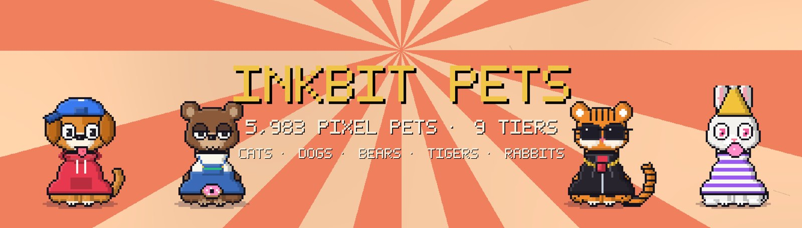

INK STREET The Inkbit Exchange is hiring 7,777 brokers · opens Oct 28, 20:00MARKET A Whale was seen scooping the dip with a spoonPET MEADOWS Census closes at 5,983 · one Golden Dragon registeredUNCHARTED ISLE 4,444 Wild Ones · ten tribes · the First InkDANGER ZONE Quarantine breaks Oct 30, 20:00APEPIXEL CITY 11 Misprints still hiding in the stackNOTICE Inkbit never DMs you to verify your walletINK STREET The Inkbit Exchange is hiring 7,777 brokers · opens Oct 28, 20:00MARKET A Whale was seen scooping the dip with a spoonPET MEADOWS Census closes at 5,983 · one Golden Dragon registeredUNCHARTED ISLE 4,444 Wild Ones · ten tribes · the First InkDANGER ZONE Quarantine breaks Oct 30, 20:00APEPIXEL CITY 11 Misprints still hiding in the stackNOTICE Inkbit never DMs you to verify your wallet

District 4 · The Pet Meadows
Inkbit Pets
5,983 cats, dogs, bears, tigers and rabbits guarding the homes of the Kingdom.
WHERE THEY CAME FROM
Every home in the Kingdom needed a guardian. North of the Capital, in the Pet Meadows, the pets were drawn: cats, dogs, bears, tigers and rabbits, each with their own hats, jackets, charms and snacks.
When the census closed, 5,983 pets had been registered.
WHO THEY ARE
Most pets are Commons and Uncommons. The wildest refused to stay in their baskets: seven Wild Legends, two Royals and one Mythic Golden Dragon.
WHAT THEY DO
They guard the homes, chase the moths away from the brokers' windows, and keep an eye on the Danger Zone border.
The Pet Meadows census has closed with 5,983 pets registered. Among them: seven Wild Legends, two Royals and one Golden Dragon, which nobody has managed to get back into its basket.
Reveal day is coming. Owners are advised to check their homes for scorch marks.